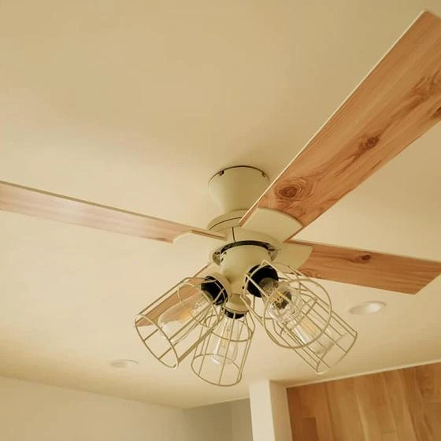
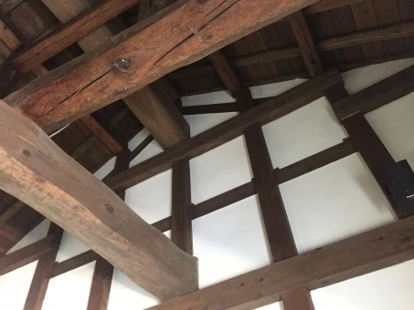
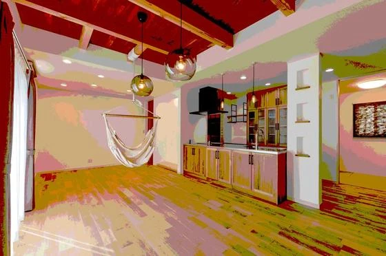
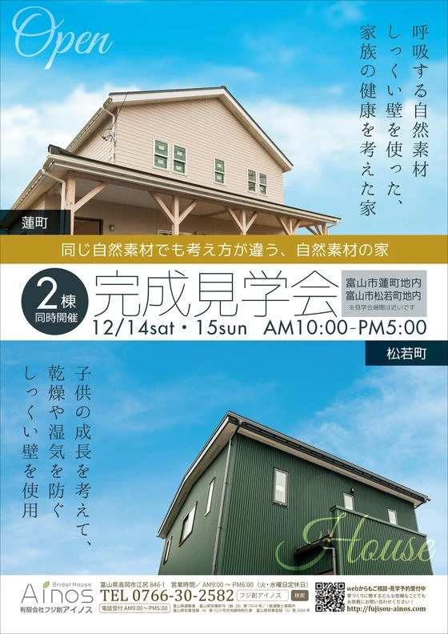
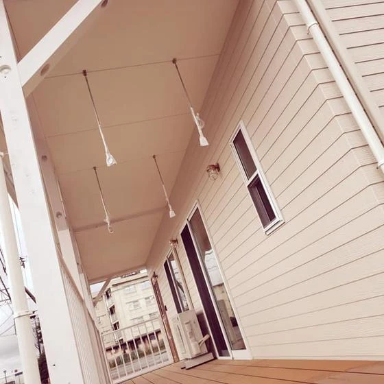
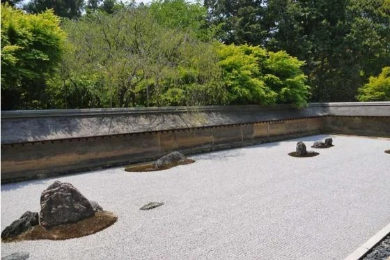
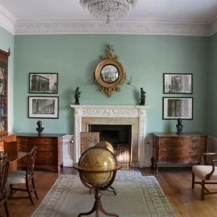
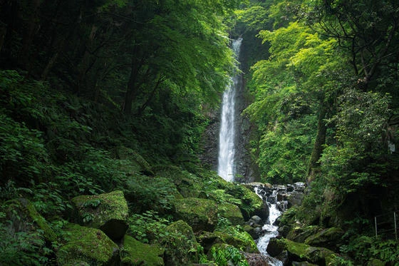

simple is best
こんにちは、富山で自然素材にこだわるホンモノの家。フジ創アイノスです。 インテリアを始めとするデザインを考える時に 「simple is best」という言葉を聞くことが多いと思います。 様々な要素をできる限りそぎ落とし
続きを読む →FUJISOU AINOS JOURNAL
家づくりのこと、暮らしのこと。
日々の想いを、お伝えします。
新しい記事から 37・40ページ
こんにちは、富山で自然素材にこだわるホンモノの家。フジ創アイノスです。 インテリアを始めとするデザインを考える時に 「simple is best」という言葉を聞くことが多いと思います。 様々な要素をできる限りそぎ落とし
続きを読む →
こんにちは、富山で自然素材にこだわるホンモノの家。フジ創アイノスです。 住まいのリモデリングというのは、間取りや設備のリフォームとは違い、 ライフスタイルを変えることです。そしてライフスタイルは、デザインによって表されま
続きを読む →
こんにちは、富山で自然素材にこだわるホンモノの家。フジ創アイノスです。 富山市で開催した【二棟同時完成見学会】 お越し頂いた皆様、シェアしてくださった皆様ありがとうございました。 フジ創アイノスでは、今後もご自身で体験し
続きを読む →
こんにちは、富山で自然素材にこだわるホンモノの家。フジ創アイノスです。 住宅の価値を高めるデザインの要素としてサスティナブルという言葉が使われます。 「持続可能」というこの言葉の概念も日本とアメリカで大きく違うようです。
続きを読む →
こんにちは、富山で自然素材にこだわるホンモノの家。フジ創アイノスです。 地図で見る日本の形は私達の頭の中に強く記憶されています。 そして変わらないものと信じています。没後２００年の伊能忠敬が 描いた精緻（せいち）な日本は
続きを読む →こんにちは、富山で自然素材にこだわるホンモノの家。フジ創アイノスです。 休日の昼間にに車を走らせていると、沿道の何件もの住宅の前で お父さんが方にタオルをかけて「タイヤ交換」をしている姿がみられました。 富山県のお父さん
続きを読む →
こんにちは、富山で自然素材にこだわるホンモノの家。フジ創アイノスです。 【同じ自然素材でも考え方の違いでこんなに変わる】 フジ創アイノスでは、 １２月１４日、１５日 の二日間、 施主様協力のもと、 富山市 で 二棟同時完
続きを読む →こんにちは、富山で自然素材にこだわるホンモノの家。フジ創アイノスです。 本格的に寒くなってきました。朝と夜の固まるような寒さの中、行動に二の足を踏んでしまいがちかもしれませんね...。 あったかいコーヒーやお湯での洗面で
続きを読む →
こんにちは、富山で自然素材にこだわるホンモノの家。フジ創アイノスです。 【二日間限定開催】 今月１４、１５日富山市で開催予定。 「幸せづくり見学会」で公開させていただく施主様邸を見学してきました。 今回は蓮町Ｎ様邸。「北
続きを読む →
こんにちは、富山で自然素材にこだわるホンモノの家。フジ創アイノスです。 世界中から、インバウンドで旅行客が訪れています。 関西空港に国内便で降りても、歩いてる方はアジアやヨーロッパはじめ、海外の方々で一杯です。 京都に向
続きを読む →こんにちは、富山で自然素材にこだわるホンモノの家。フジ創アイノスです。 【同じ自然素材でも考え方の違いでこんなに変わる】 フジ創アイノスでは、 １２月１４日、１５日 の二日間、 施主様協力のもと、 富山市 で 二棟同時完
続きを読む →こんにちは、富山で自然素材にこだわるホンモノの家。フジ創アイノスです。 １２月に入り、ところによっては氷点下並の朝を迎えた地域も多かったのではないでしょうか。 ツイッターやフェイスブックを開くと皆さんから「風邪をひいてし
続きを読む →
こんにちは、富山で自然素材にこだわるホンモノの家。フジ創アイノスです。 高岡市内免4丁目の生活利便性の良い住宅街に、家族の暮らし方を考えたモデルハウス2棟の同時販売を開始しました。 自然素材の風合いを生かしたナチュラルテ
続きを読む →
こんにちは、富山で自然素材にこだわるホンモノの家。フジ創アイノスです。 2015年末に開かれたCOPパリ会議において日本は2030年までに GDPあたりの温室効果ガスを13年比26％削減することを約束した。 その内容を詳
続きを読む →
こんにちは、富山で自然素材にこだわるホンモノの家。フジ創アイノスです。 家は、その地域の気候や文化に根ざしそれぞれの特徴があるものです。 建築家は建物の経つべき地霊に聴いて、湧き上がっていく形をイメージしてゆきます。 で
続きを読む →
こんにちは、富山で自然素材にこだわるホンモノの家。フジ創アイノスです。 高岡市内免4丁目の生活利便性の良い住宅街に、家族の暮らし方を考えたモデルハウス2棟の同時販売を開始しました。 自然素材の風合いを生かしたナチュラルテ
続きを読む →こんにちは、富山で自然素材にこだわるホンモノの家。フジ創アイノスです。 自分の家づくりを、どのように進めれば良いのか迷うことはいろいろとあるものです。 特に設計のこととなると自分の希望はかなえたいと思う反面 できれば人の
続きを読む →こんにちは、富山で自然素材にこだわるホンモノの家。フジ創アイノスです。 木目が活き、カラーが絶妙に調和している仕上がり感に、使われた皆様が大変驚かれます。 リフォーム業者にU-OILを指定する方もいらっしゃいます。 また
続きを読む →
高岡市内免4丁目の生活利便性の良い住宅街に、家族の暮らし方を考えたモデルハウス2棟の同時販売を開始しました。 自然素材の風合いを生かしたナチュラルテイストで、漆喰、無垢を標準仕様。 高性能な断熱性能・省エネ性能で富山の四
続きを読む →
こんにちは、富山で自然素材にこだわるホンモノの家。フジ創アイノスです。 そもそも、ビニールクロスがここまで広まった理由は何よりも コストの安さとメンテナンスの容易さです。 例えば、汚れがついても、中性洗剤を使って拭き取れ
続きを読む →
こんにちは、富山で自然素材にこだわるホンモノの家。フジ創アイノスです。 壁に使う自然素材にも、いろいろあります。 床と同じ木材を使うとか、和紙を張るケースもあります。 もちろん様々な塗り壁も、事前素材からできているものが
続きを読む →
こんにちは、富山で自然素材にこだわるホンモノの家。フジ創アイノスです。 先日も見学会を開催し、参加者様には大変良い感触を頂きました(^^) 太陽光発電によるエコと北欧風のアンティークな内装、ガルバニウムを使った耐久性に富
続きを読む →
こんにちは、富山で自然素材にこだわるホンモノの家。フジ創アイノスです。 自然素材の特徴の一つに、一つとして同じものがないことも挙げられます。 樹木が育つためには葉を繁らせるための枝が必要であり、枝の跡が製材した、 後に節
続きを読む →
こんにちは、富山で自然素材にこだわるホンモノの家。フジ創アイノスです。 漆喰の塗り壁は湿度にあわせて湿気を吸収＆放出し 快適な空気環境をつくる自然の調湿機能があります 独特の風合いは温かみにあふれ 人の心をほっと和ませる
続きを読む →